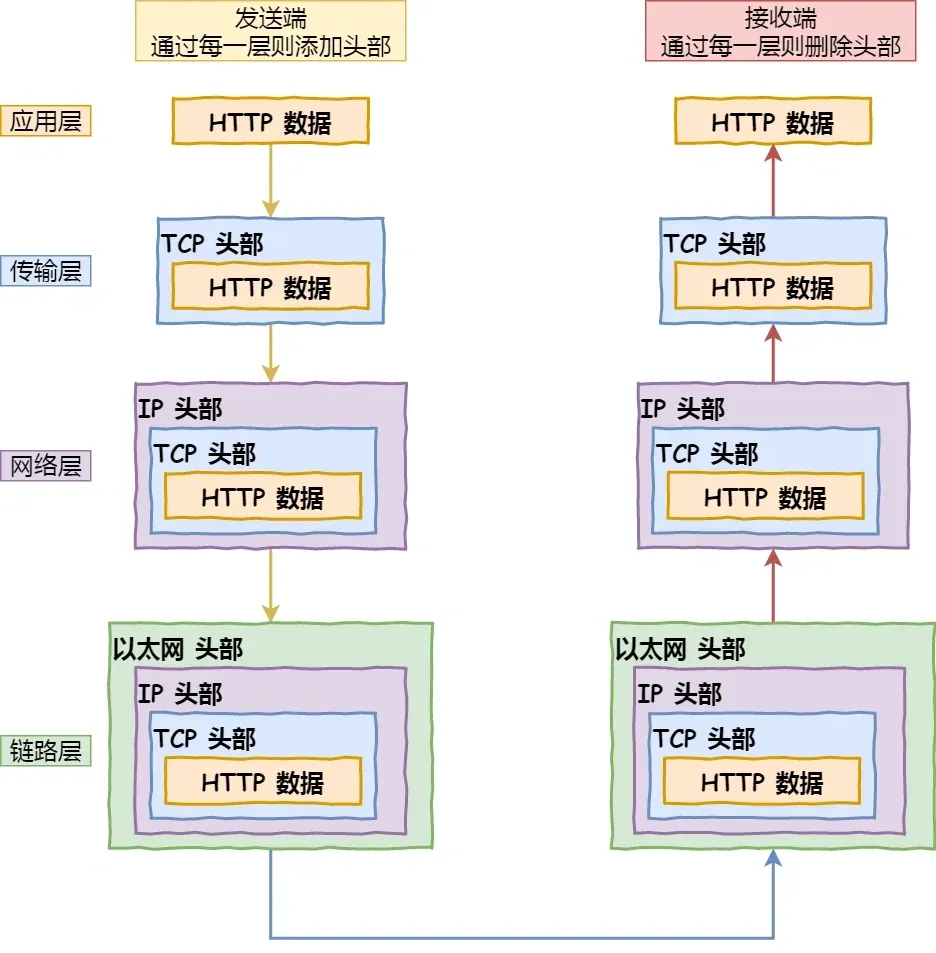
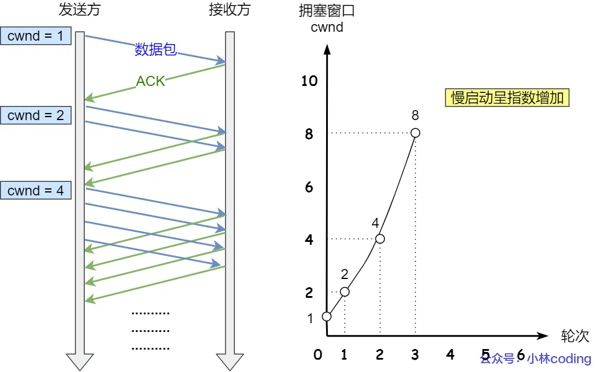
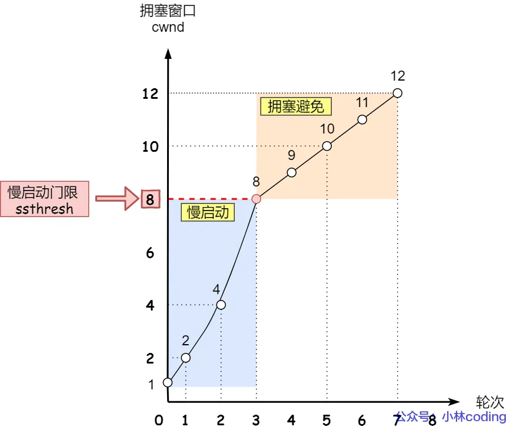
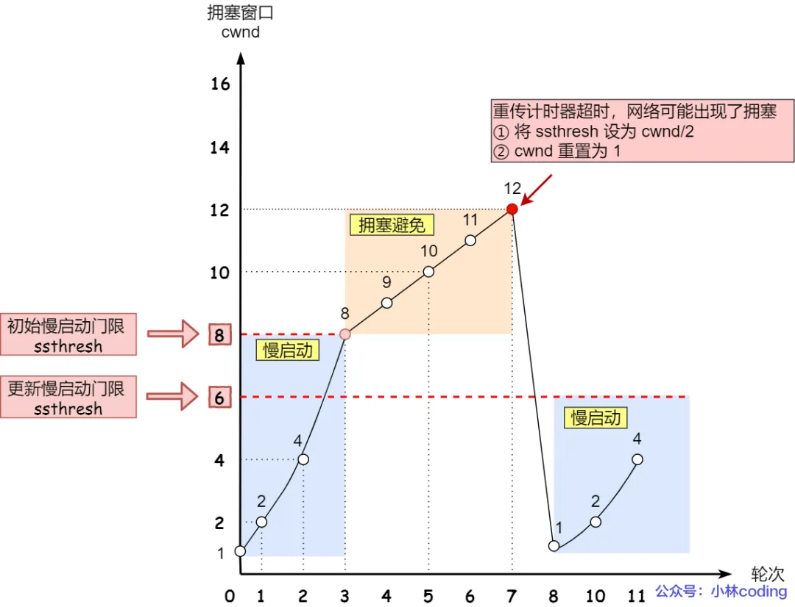
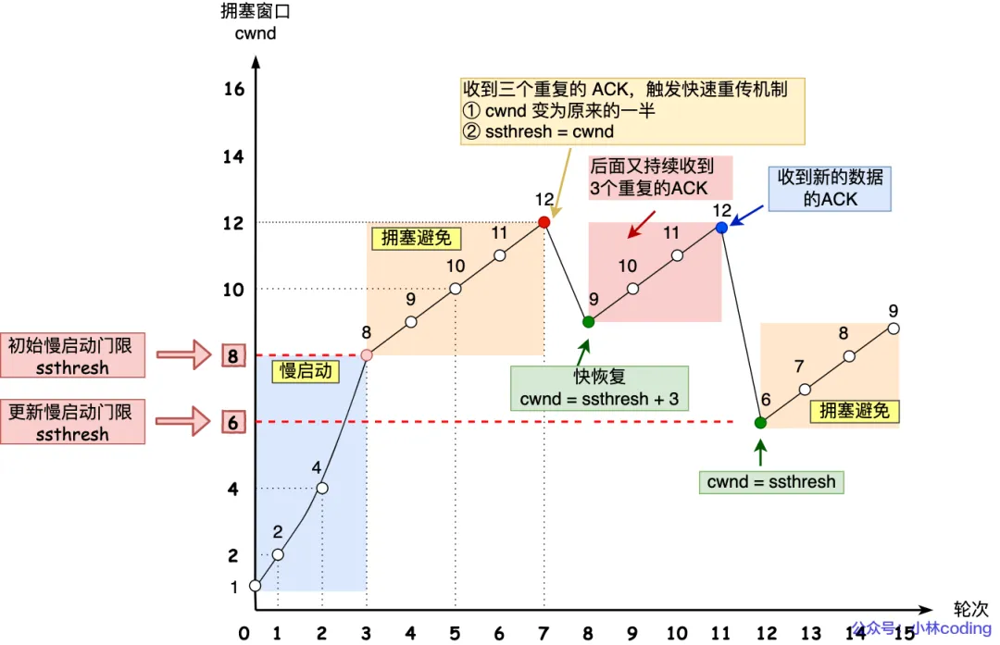

面试题
好未来后端
URL从输入到响应的流程？

-
解析 URL：分析 URL 所需要使用的传输协议和请求的资源路径。如果输入的 URL 中的协议或者主机名不合法，将会把地址栏中输入的内容传递给搜索引擎。如果没有问题，浏览器会检查 URL 中是否出现了非法字符，则对非法字符进行转义后在进行下一过程。
-
缓存判断：浏览器会判断所请求的资源是否在缓存里，如果请求的资源在缓存里且没有失效，那么就直接使用，否则向服务器发起新的请求。
-
DNS 解析：如果资源不在本地缓存，首先需要进行 DNS 解析。浏览器会向本地 DNS 服务器发送域名解析请求，本地 DNS 服务器会逐级查询，最终找到对应的IP地址。
-
获取 MAC 地址：当浏览器得到 IP 地址后，数据传输还需要知道目的主机 MAC 地址，因为应用层下发数据给传输层，TCP 协议会指定源端口号和目的端口号，然后下发给网络层。网络层会将本机地址作为源地址，获取的 IP 地址作为目的地址。然后将下发给数据链路层，数据链路层的发送需要加入通信双方的 MAC 地址，本机的 MAC 地址作为源 MAC 地址，目的 MAC 地址需要分情况处理。通过将 IP 地址与本机的子网掩码相结合，可以判断是否与请求主机在同一个子网里，如果在同一个子网里，可以使用 APR 协议获取到目的主机的 MAC 地址，如果不在一个子网里，那么请求应该转发给网关，由它代为转发，此时同样可以通过 ARP 协议来获取网关的 MAC 地址，此时目的主机的 MAC 地址应该为网关的地址。
-
建立 TCP 连接：主机将使用目标 IP 地址和目标 MAC 地址发送一个 TCP SYN 包，请求建立一个 TCP 连接，然后交给路由器转发，等路由器转到目标服务器后，服务器回复一个 SYN-ACK 包，确认连接请求。然后，主机发送一个 ACK 包，确认已收到服务器的确认，然后 TCP 连接建立完成。
-
HTTPS 的 TLS 四次握手：如果使用的是 HTTPS 协议，在通信前还存在 TLS 的四次握手。
-
发送 HTTP 请求：连接建立后，浏览器会向服务器发送 HTTP 请求。请求中包含了用户需要获取的资源的信息，例如网页的 URL、请求方法（GET、POST 等）等。
-
服务器处理请求并返回响应：服务器收到请求后，会根据请求的内容进行相应的处理。例如，如果是请求网页，服务器会读取相应的网页文件，并生成HTTP响应。
追问：TCP 连接除了 IP 地址还需要什么？
还需要端口号，端口号用于标识一个主机上的特定服务或进程。
-
源端口号是发送端应用程序使用的端口，它是一个 16 位的数字，范围从 0 到 65535。一般来说，客户端通常使用一个大于 1023 的临时端口号。
-
目的端口号是接收端应用程序使用的端口，不同的服务通常使用固定的知名端口号，例如 HTTP 使用端口 80 或 8080，HTTPS 使用端口 443，FTP 使用端口 21 等。
追问：流程在传输层做了什么事情？
主要有以下这些事情：
- 建立连接：TCP 三次握手连接的建立，这个过程中会确定双方的初始序列号和滑动窗口大小
- 数据传输 ：当应用层的数据传递给传输层时，TCP 会将较大的数据分割成适合在网络中传输的较小的段，并为每个段添加 TCP 头部，包括序列号、确认号、窗口大小等信息。当接收方收到 TCP 段后，会发送 ACK 数据包来确认收到的数据。客户端根据服务器的 ACK 和窗口大小调整数据发送速度，继续发送后续 TCP 段。如果发送方在一定时间内没有收到 ACK，会认为数据丢失，会重传相应的 TCP 段，这个时间间隔称为超时重传时间（RTO）。
- 关闭连接：关闭 TCP 连接时，会进行四次挥手过程。
追问：流程在网络层做了什么事情？
-
传输层的 TCP 段传递到网络层，网络层将其封装成 IP 数据包，设置源 IP 地址和目的 IP 地址，添加其他 IP 头部信息。
-
路由器根据 IP 数据包的目的 IP 地址和自己的路由表进行路由选择，如果数据超过 MTU 大小，就会对数据包进行分片。
-
数据包在网络中传输，经过多个路由器，每个路由器都会根据路由表转发数据包，并递减 TTL。
-
当数据包到达目的主机，网络层进行解封和重组操作，将 TCP 段传递给传输层。
追问：TCP有TCP的分段，IP层有IP分片。这两个有什么区别？现在用的是哪个？
两者的区别：
- TCP 分段：发生在传输层，由 TCP 协议执行。当 TCP 从应用层接收到较大的数据块，超过 MSS 大小之后，会将其分成多个较小的 TCP 段，每个 TCP 段都包含 TCP 头部，接收方根据 TCP 段的序列号将它们重新组装成完整的数据块，然后传递给应用层。
- IP 分片：发生在网络层，由 IP 协议执行。当 IP 数据包的大小超过链路层的最大传输单元（MTU）时，IP 会将数据包分成多个较小的分片。每个 IP 分片包含 IP 头部，由目的主机的网络层进行重组。目的主机根据 IP 分片的标识、标志和片偏移将它们重新组合成原始的 IP 数据包，然后传递给传输层。
TCP 通常会尽量避免 IP 分片，原因是 IP 分片之后，只有第一个分片才有TCP头部信息，那么一旦一个分片丢失，整个数据包都需要重传，会影响传输效率，并且由于 IP 分片是基于网络链路的 MTU，可能会在不同的网络链路中发生多次分片和重组，增加网络设备（如路由器）的处理开销。
在现代网络中，TCP 通常会尽量避免 IP 分片，主要作法是：TCP 在建立连接时，会协商 MSS，它是 TCP 段中数据部分的最大长度，通常是根据链路的 MTU 计算得到。例如，在以太网中，MTU 通常是 1500 字节，TCP 的 MSS 通常是 1460 字节（MTU 减去 IP 头部和 TCP 头部的长度）。这样 TCP 会将数据分成 MSS 大小的段，从而避免在网络层进行 IP 分片，提高传输效率。
拥塞控制介绍一下 ？
- 连接建立，cwnd = MSS，进入慢启动阶段，每收到一个 ACK，cwnd 翻倍，发送数据量不断增加。

- 当 cwnd 达到 ssthresh，进入拥塞避免阶段，cwnd 线性增长。

- 如果发生超时，ssthresh 减半，cwnd 重置为 MSS（1 个 MSS），重新进入慢启动。

- 当发送方收到三个重复的 ACK 时，认为数据包丢失，但不是因为网络拥塞，而是可能某个数据包的乱序。在快速重传之后，发送方进入快速恢复阶段。通常将 ssthresh 减半，cwnd 设置为 ssthresh 加上 3 倍的 MSS（因为收到了三个重复的 ACK），并继续发送新数据。

常用缩写
-
P2P：Peer to peer 点对点协议
-
TCP：Transmission Control Protocol 传输控制协议
-
UDP：User Datagram Protocol 用户数据报协议
-
FDM：Frequency division multiplexing 频分
-
TDM：Time division multiplexing 时分
-
WDM：Wave division multiplexing 波分
-
VC：virtual circuit 虚电路
-
DSL：digital subscriber line 数字用户线路
-
HFC：Hybird fiber coax 混合光纤同轴网络
-
TP：双绞线
-
ISP：Internet Sevice Providers 网络服务提供商
-
SAP：Services Access Point 服务访问点
-
HTTP：Hyper Text Transfer Protocol 超文本传输协议
-
RTT：round-trip time 往返时间
-
SMTP：Simple Mail Transfer Protocol 简单邮件传输协议
-
MIME：multimedia mail extension 多媒体邮件扩展
-
POP：Post Office Protocol 邮局访问协议
-
IMAP：Internet Mail Access Protocol 邮件访问协议
-
DNS：Domain Name System 域名系统
-
TLD：Top Level Domain 顶级域
-
RR：Resource Records 资源记录
-
DASH：Dynamic，Adaptive Streaming over HTTP
-
CDN：Content Distribution Networks 内容分发网络
-
SDN：Software Defined Networking 软件定义网络
-
RDT：Reliable data transfering 可靠数据传输
-
SR：Selective Repeat 选择重传
-
GBN：Go Back N 回退N步
-
MSS：Maximum Segment Size 最大报文段大小
-
RR：Round Robin 轮询
-
WFQ：Weighted Fair Queuing 加权队列
-
IP：Internet Protocol 网络协议
-
DHCP：Dynamic Host Configuration Protocol 动态主机配置协议
-
NAT：Network Address Translation 网络地址转换
-
LS：Link State 链路状态
-
DV：distance vector 距离向量
-
RIP：Routing Information Protocol 路由信息协议
-
OSPF：Open Shortest Path First 开放的最短路径优先
-
AS：autonomous systems 自治系统
-
BGP：Border Gateway Protocol 边界网关协议
-
eBGP：External Border Gateway Protocol 外部边界网关协议
-
iBGP：internal Border Gateway Protocol 内部边界网关协议
-
ICMP：Internet Control Message Protocol 网络控制报文协议
-
SNMP：Simple Networks Management Protocol 简单网络管理协议
-
CRC：Cyclic Redundancy Check 循环冗余校验
-
MAC：Media Access Control 媒体访问控制
-
TDMA：Time Division Multiple Access 时分多路访问
-
FDMA：Frequency Division Multiple Access 频分多路访问
-
CDMA：Code Division Multiple Access 码分多路访问
-
CSMA：Carrier Sense Multiple Access 载波侦听多路访问
-
CD：Collision Detection 冲突检测
-
CA：Collision Avoidance 冲突避免
-
DOCSIS：Data Over Cable Service Interface Spec 有线电缆数据服务接口规范
-
ARP：Address Resolution Protocol 地址解析协议
-
DES：Data Encryption Standard 数据加密规范
-
AES：Advanced Encryption Standard 先进加密规范
-
KDC：Key Distribution Center 密钥分发中心
-
CA：Certification Authority 证书认证
-
IDS：Intrusion Detection System入侵检测系统
-
DoS：Denial of Service 拒绝服务
-
CIDR：Classless Inter Domain Routing 无类域间路由
-
AIMD：Additive Increase Multiplicative Decrease 和式增乘式减
-
SYN：Synchronize Sequence Number 同步序列编号
-
FTTH：Fiber to The Home 光纤到户
-
AON：Active Optical Network 主动光纤网络
-
PON：Passive Optical Network 被动光纤网络
-
SSL：Secure Sockets Layer 安全套接层
-
PDU：Protocol Data Unit 协议数据单元
-
MTU：Maximum Transmission Unit 最大传输单元